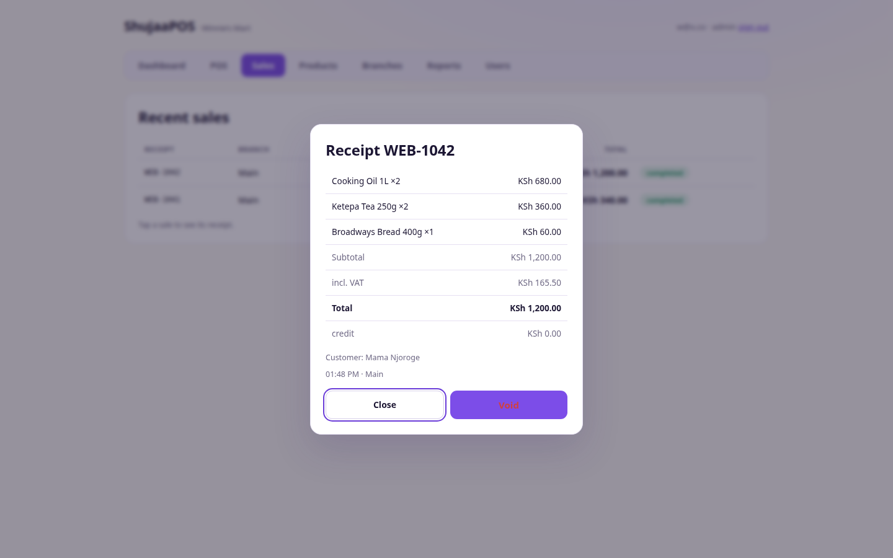

The Denya Book: How to Track Who Owes You Money
ShujaaPOS · November 2026 · 7 min read
Every duka has one. The exercise book behind the counter with names like "Mama Njoroge" and "Kevo wa upstairs", amounts scribbled next to them, some crossed out in three different pens. The denya book — your list of who owes the shop money.
It works until it doesn't: the page tears, someone writes the wrong amount, a customer pays half and nobody notes it down. Three months later you're arguing about whether it's KSh 800 or KSh 1,800 — and you're guessing.
Why the notebook fails you
The problem isn't the book, it's that the debt lives nowhere else. When a customer takes goods on credit, three things should be recorded at that exact moment: who took it, what they took, and what it cost. A notebook captures maybe two of those, and only if the cashier remembers to write it.
Then the real cost shows up later:
- Disputes you can't win. "I paid you last Tuesday" — did they? To whom? For which debt?
- Forgotten debts. Small balances of KSh 200–500 that add up to real money across a month.
- No view of total exposure. How much is out there in the neighbourhood right now? Most shop owners can't answer that.
- It dies with the book. Lose the book, lose the debts.
A better system: the debt lives on the sale
The fix is simple in principle: a credit sale should record the customer's name at the moment of sale — not as a separate note, but as part of the transaction itself. The item, the price, the date and the person are then permanently tied together.

Example: Mama Njoroge takes 2 litres of cooking oil and bread — KSh 1,200 on credit. Recorded as a credit sale under her name, it shows up on the receipt, in the day's sales, and in the report. When she pays later, the record is there to check against — no digging through pages.
Five rules that keep debt under control
- Decide who gets credit — and write it down. Regulars only? Anyone with a phone number? A rule you can say out loud beats a vibe.
- Set a limit per customer. Many dukas cap informal credit around KSh 2,000–5,000. Pick a number the shop can survive if it's never paid.
- Take a phone number. A name alone can't be called on the 1st of the month. A number can.
- Record partial payments immediately. KSh 500 paid against KSh 1,200 owed — write it now or lose it forever.
- Review weekly. Ten minutes every Sunday: who's over their limit, who's gone quiet, who's about to become a write-off.
Common mistakes
- Credit for everyone. If everyone can take goods now and pay "end month", you're running a free bank, not a shop.
- Two places for one debt. The till says one thing, the book another. Pick one source of truth.
- Never saying no. A polite "you still owe KSh 1,200 — let me clear that first" is a business practice, not rudeness.
- Pricing credit sales differently in your head. If you silently add a margin for credit, record it honestly or don't do it — fuzzy maths becomes real losses.
The takeaway
Debt isn't the enemy — in a Kenyan neighbourhood, judicious credit builds loyalty supermarkets can't match. The enemy is unrecorded debt. Whatever system you use, the rule is the same: the debt is written down at the moment of sale, tied to a name, or it doesn't exist.
ShujaaPOS records the customer's name on every credit sale — so who owes you is on record, not in a notebook.
Try it in your browser